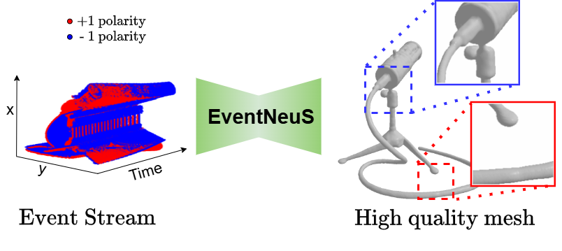

I am a master's student in Visual Computing at Universität des Saarlandes, currently conducting my thesis research at the 4D and Quantum Computer Vision Group within the Max Planck Institute for Informatics (MPI-INF).
Advised by Dr. Vladislav Golyanik and Prof. Dr. Christian Theobalt, my work focuses on 3D Reconstruction, Neural Rendering, and Event-based Vision. Specifically, I am exploring novel methods to extract high-fidelity 3D geometry from isolated event streams.
I intend to graduate in early 2026 and am actively seeking opportunities in 3D computer vision and AI research.
I've spent great time at
MPI-INF,
DFKI, and
IIT Delhi, working with exceptional researchers.
Publications

Reviewing
3DV 2026
Experience
- M.Sc. in Visual Computing, Universität des Saarlandes — thesis on 3D Mesh Reconstruction
- Research Assistant, DFKI — TwinMaP Project (Guided Motion Diffusion)
- Research Assistant, MPI-INF — 3D Face & Hand Capture
- Project Scientist, IIT Delhi
- B.Tech. in IT & Mathematical Innovations, University of Delhi